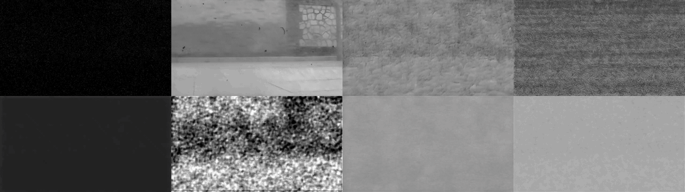
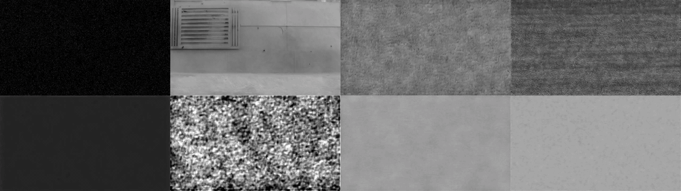

AE2VID: Event-based Video Reconstruction via Aperture Modulation
Peking University PKU-AI2 Robotics Joint Lab of Embodied AI
Video

AE2VID uses aperture modulation to provide dense scene cues for event-based video reconstruction.
Abstract
Event-based video reconstruction usually relies on sparse motion-triggered events, which makes static or low-motion regions difficult to recover. AE2VID periodically modulates the aperture to generate dense aperture-modulation-triggered events, then fuses them with motion-triggered events for more stable and faithful reconstruction.
Pipeline

AENet predicts dense references from aperture-triggered events. MENet reconstructs video frames from motion events and dense references.
Real Dataset Results
Qualitative reconstruction results on real AMED sequences.

